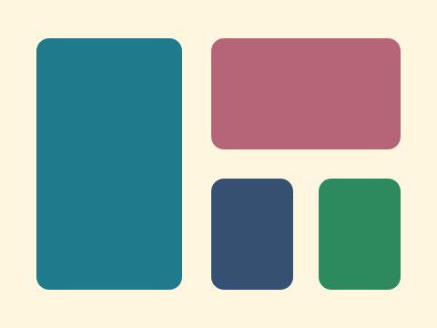
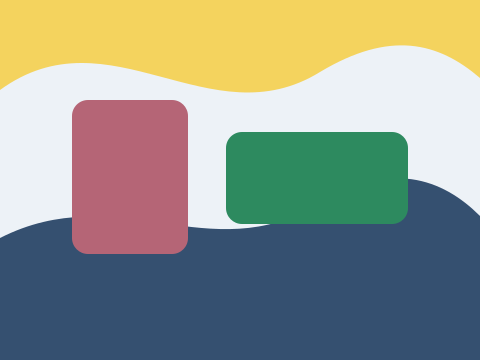

Exemplo



Código base
<div class="exemplo">
<div class="galeria-imagens"><figure class="item-galeria"><img class="foto-galeria" src="../assets/galeria-projeto-1.svg" alt="Cartaz colorido do projeto 1"><figcaption>Projeto 1</figcaption></figure><figure class="item-galeria"><img class="foto-galeria" src="../assets/galeria-projeto-2.svg" alt="Cartaz colorido do projeto 2"><figcaption>Projeto 2</figcaption></figure><figure class="item-galeria"><img class="foto-galeria" src="../assets/galeria-projeto-3.svg" alt="Cartaz colorido do projeto 3"><figcaption>Projeto 3</figcaption></figure></div>
</div>
<style>
.galeria-imagens {
display: grid;
grid-template-columns: repeat(auto-fit, minmax(150px, 1fr));
gap: 14px;
}
.item-galeria {
margin: 0;
overflow: hidden;
border: 1px solid #d7e0ea;
border-radius: 8px;
background: #ffffff;
}
.foto-galeria {
width: 100%;
aspect-ratio: 4 / 3;
object-fit: cover;
display: block;
}
.item-galeria figcaption {
margin: 0;
padding: 10px;
font-weight: bold;
}
</style>Atividade prática
Adicione novas imagens e teste diferentes tamanhos de coluna na galeria.
- Abra esta página no navegador.
- Edite o CSS no arquivo ou no DevTools.
- Anote qual propriedade mudou o resultado visual.